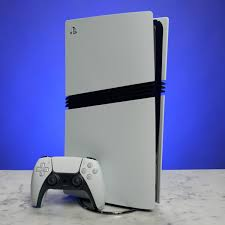
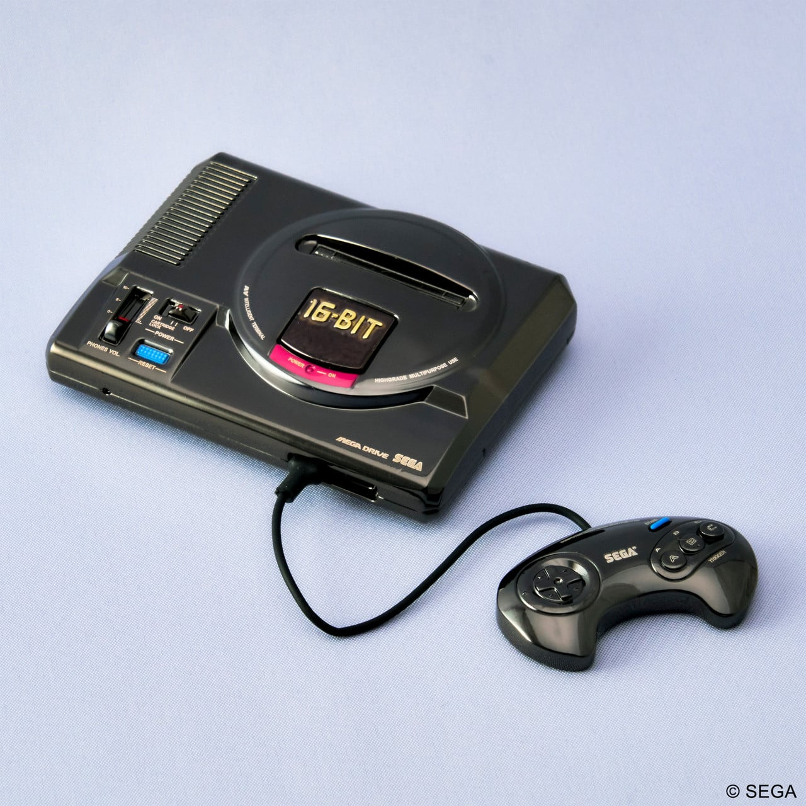

Jugando con tablas de nivel II
|
 |
 |
 |
 |
 |
| Consola |
PlayStation 5 |
Xbox Series X |
Nintendo Switch 2 |
Super Nintendo (SNES) |
Sega Mega Drive |
| GPU |
10,28 TFLOPs, 36 CUs (RDNA 2) |
12 TFLOPs, 52 CUs (RDNA 2) |
SoC integrado |
Usa su propio chip para gráficos, con capacidad para sprites y tiles típicos de la época |
No tiene GPU moderna, usa el 68000 + hardware de video para dibujar sprites / tiles |
| CPU |
8 núcleos AMD Zen 2 (~3,5 GHz) |
8 núcleos AMD Zen 2 a 3,8 GHz (3,6 GHz con SMT) |
SoC Nvidia Tegra (ARM) |
Procesador Ricoh 5A22 (~3,58 MHz) |
Motorola 68000 (~7,67 MHz) + Z80 para sonido |
| Velocidad/Ancho de banda |
Ancho de banda de memoria: 448 GB/s |
Velocidad IO: 2,4 GB/s sin comprimir, 4,8 GB/s |
(no tiene ancho de banda “GPU discreta”, uso de memoria compartida) |
Velocidad de bus / memoria baja comparada con consolas modernas |
La VRAM y el bus de datos eran mucho más limitados que en consolas modernas |
| Objetivo de rendimiento/Gráficos |
Lectura SSD: ~5,5 GB/s bruto |
Resolución de juego hasta 4K, HDR, hasta 120 FPS |
Resolución en portátil: 1280×720, en modo TV hasta 1080p |
Resolución típica: hasta ~256×224 px (depende del modo) |
Resolución típica: 320×224 px (puede variar) |
| Almacenamiento |
SSD de 825 GB personalizados |
SSD NVMe personalizada de 1 TB |
32 GB (parte usada para el sistema operativo) |
Cartuchos (no tiene almacenamiento interno tradicional) |
Cartuchos (varían, típicamente varios megabytes) |